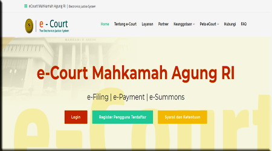

Bismillahirrohmaanirrohiim
 Tahapan Penyusunan putusan;
Tahapan Penyusunan putusan;
Pertama, Tahap Konstatir. Mengkonstatir peristiwa hukum yang diajukan oleh para pihak kepadanya dengan melihat, mengakui atau membenarkan telah terjadinya peristiwa yang telah diajukan tersebut. Jadi, mengkonstatir berarti bahwa Hakim melihat, mengetahui, membenarkan, telah terjadinya peristiwa, harus pasti bukan dugaan, yang didasarkan alat bukti pembuktian. Proses pembuktian dimulai meletakkan beban bukti yang tepat, kepada siapa beban bukti ditimpakan. Menilai alat bukti yang diajukan, apakah alat bukti tersebut memenuhi syarat formil, syarat materil, memenuhi batas minimal bukti serta mempunyai nilai kekuatan pembuktian. Menentukan terbukti atau tidak/dalil peristiwa yang diajukan. Bagi Hakim yang penting fakta peristiwa, bukan hukumnya. Pembuktian adalah ruh bagi putusan Hakim.
Kedua, Tahap Kualifisir. Mengkualifisir berarti menilai peristiwa yang dianggap benar-benar terjadi itu termasuk hubungan hukum mana dan hukum apa, dengan kata lain harus ditemukan hubungan hukumnya bagi peristiwa yang telah dikonstatir itu. Jadi, mengkualifisir berarti mencari/menentukan hubungan hukum terhadap dalil/peristiwa yang telah dibuktikan. Hakim menilai terhadap dalil/peristiwa yang telah terbukti atau menilai dalil/peristiwa yang tidak terbukti dengan peraturan perundang-undangan yang merupakan hukum materil atau dapat dikatakan mencari penerapan hukum yang tepat terhadap dalil/peristiwa yang telah dikonstatir.
Tahap Konstituir. Mengkonstituir, yaitu menetapkan hukumnya atau memberikan keadilan kepada para pihak yang berperkara.
Ekonomi Syari'ah
 Sebagai institusi penegak hukum, peradilan agama harus kuat status dan kedudukannya sehingga dapat memberikan kepastian hukum kepada para pencari keadilan. Untuk itu, yang lebih diutamakan dari reformasi peradilan agama, yang berkaitan dengan status dan kedudukannya sebagai salah satu pelaksana dari struktur kekuasaan kehakiman. Perluasan wewenang pengadilan agama setelah diundangkannya Undang-undang No 3 tahun 2006 tentang perubahan Undang-undang No.7 tahun 1989 tentang Peradilan Agama, antara lain antara lain di bidang perkawinan, waris, wasiat, hibah, wakaf, zakat, infaq, shadaqah, dan ekonomi syari’ah (pasal49).
Sebagai institusi penegak hukum, peradilan agama harus kuat status dan kedudukannya sehingga dapat memberikan kepastian hukum kepada para pencari keadilan. Untuk itu, yang lebih diutamakan dari reformasi peradilan agama, yang berkaitan dengan status dan kedudukannya sebagai salah satu pelaksana dari struktur kekuasaan kehakiman. Perluasan wewenang pengadilan agama setelah diundangkannya Undang-undang No 3 tahun 2006 tentang perubahan Undang-undang No.7 tahun 1989 tentang Peradilan Agama, antara lain antara lain di bidang perkawinan, waris, wasiat, hibah, wakaf, zakat, infaq, shadaqah, dan ekonomi syari’ah (pasal49).
Penyebutan ekonomi syariah menjadi penegas bahwa kewenangan pengadilan agama tidak dibatasi dengan menyelesaikan sengketa di bidang perbankan saja, melainkan juga di bidang ekonomi syariah lainnya. Misalnya, lembaga keuangan mikro syariah, asuransi syariah, reasuransi syariah, reksa dana syariah, obligasi dan surat berjangka menengah syariah, sekuritas syariah, pembiayaan syariah, pegadaian syariah, dana pensiun lembaga keuangan syariah dan bisnis syariah.
Asas-asas Umum dalam Undang-Undang RI Nomor 7 Tahun 1989 tentang Peradilan agama yaitu: (1). Asas Personalitas KeIslaman, (2). Asas Kebebasan, (3). Asas Wajib Mendamaikan; (4). Asas persidangan terbuka untuk umum; (5). Asas legalitas; (6). Asas Cepat, sederhana dan biaya ringan; (7). Asas Equality; (8). Asas Aktif memberikan bantuan.
Pasal 55 (2) Undang-undang Perbankan Syariah, para pihak diberikan kebebasan untuk menentukan isi akad tanpa bertentangan dengan hukum Islam dan BW. Hukum Islam mengakui kebebasan berakad (mabda’ Hurriyah at Ta’a qud) yaitu suatu prinsip hukum yang menyatakan bahwa setiap orang bebas membuat akad jenis apapun dan memasukkan klausul apa saja kedalam akad sepanjang tidak memakan harta sesama dijalan bathil.12 Sedangkan dalam pasal 1338 BW bahwa para pihak diberikan pula kebebasan dalam menentukan isi kontrak, sepanjang tidak bertentangan dengan UU, kesusilaan dan ketertiban umum. Perjanjian yang dibuat secara sah berlaku sebagai undang-undang bagi mereka yang membuatnya.
Dengan demikian, para pihak bebas membuat perjanjian dan menentukan mekanisme penyelesaian sengketa baik melalui lembaga peradilan (peradilan Agama) ataupun non litigasi seperti musyawarah, mediasi, lembaga arbitrase (Basyarnas) sepanjang proses penyelesaiannya menerapkan prinsip syariah. Sejalan dengan ketentuan di atas, Penyelesaian sengketa melalui lembaga arbitrase tentunya harus berdasarkan Undang-Undang RI Nomor 30 Tahun 1999 tentang Arbitrase Syari’ah. Dalam Pasal 60 mengatur bahwa putusan Badan Arbitrase Syari’ah bersifat final dan mempunyai kekuatan hukum tetap dan mengikat para pihak.
Namun setelah perubahan Undang-Undang Kekuasaan Kehakiman, Pasal 59 Undang-Undang No. 48 Tahun 2009 dijelaskan bahwa eksekusi putusan arbitrase (termasuk arbitrase syari’ah) dilaksanakan atas perintah ketua Pengadilan Negeri. Ketentuan pasal 59 UU No. 48 Tahun 2009 ini jelas bertentangan dengan pasal 49 Undang-Undang RI Nomor 3 Tahun 2006 yang telah dirubah menjadi UU No. 50 Tahun 2009. Sangat jelas adanya reduksi kompetensi absolut peradilan agama di bidang perbankan syariah. Peradilan agama berdasarkan Undang-undang Nomor 3 tahun 2006 mempunyai kompetensi menangani perkara ekonomi syariah yang di dalamnya termasuk perkara perbankan syariah ternyata dikurangi oleh perangkat hukum lain. Seyogyanya Undang-Undang Peradilan Agama dijadikan dasar atas perubahan Undang-Undang kekuasaan Kehakiman.
Menurut Mukti Arto13, ada dua asas untuk menentukan kompetensi absolut pengadilan agama, yaitu: Pertama, apabila suatu perkara menyangkut status hukum seorang muslim, dan/atau Kedua, suatu sengketa yang timbul dari suatu perbuatan atau peristiwa hukum yang dilakukan atau terjadi berdasarkan hukum Islam atau berkaitan erat dengan status hukum sebagai muslim.
Dari uraian tersebut di atas, maka penyelesaian sengketa ekonomi syariah tetap menjadi kompetensi absolut pergadilan agama dan tidak dapat diperiksa oleh badan pengadilan lainnya. Walaupun para pihak diberikan kebebasan untuk menentukan mekanisme penyelesaian sengketa, namun tetap proses penyelesaiannya berdasarkan prinsip syariah sebagaimana diatur dalam Pasal 55 ayat (3). Hal ini didasarkan bahwa hubungan hukum yang terjadi antara subyek hukum berdasarkan prinsip syariah maka, akan melahirkan akibat hukum, tentunya proses penyelesainnya berdasarkan pula pada prinsip syariah. Sedangkan Pengadilan yang mampu menerapkan prinsip syariah serta menjadikan al Qur’an, Hadits Rasul, ijtihad para ahli hukum Islam sebagai pedoman beracara dalam peradilan hanyalah Pengadilan Agama. Tetap disadari bahwa hakim pengadilan agama awam mengenai masalah ekonomi. Oleh karena itu, perluasan kewenangan peradilan agama semestinya dibarengi dengan kesiapan sumberdaya manusia serta peraturan perundang-undangan yang mendukung sehingga tidak menimbulkan konflik norma seperti yang terjadi saat ini dan memberikan kepastian hukum bagi para pencari keadilan dalam penanganan sengketa ekonomi syariah.
e-Court Mahkamah Agung RI

E-Court Mahkamah Agung RI adalah layanan bagi pengguna terdaftar untuk pendaftaran perkara secara online, mendapatkan taksiran panjar biaya perkara secara online, pembayaran secara online, pemanggilan yang dilakukan dengan saluran elektronik, dan persidangan yang dilakukan secara elektronik.Dengan kata lain, dalam E-Court Mahkamah Agung RI, tercakup layanan sebagai berikut dan bisa diakses di situs ecourt.mahkamahagung.go.id:
-
E-Filing (Pendaftaran Perkara Online di Pengadilan)
-
E-Payment (Pembayaran Panjar Biaya Perkara Online)
-
E-Summons (Pemanggilan Pihak secara Online)
-
E-Litigation (Persidangan secara Online)
E-court sebagaimana tergambar dalam Peraturan Mahkamah Agung Nomor 1 Tahun 2019 tentang Administrasi Perkara dan Persidangan di Pengadilan Secara Elektronik (“PERMA 1/2019”) merupakan salah satu bentuk implementasi Sistem Pemerintahan Berbasis Elektronik yang telah diatur dalam Peraturan Presiden Nomor 95 Tahun 2018 tentang Sistem Pemerintahan Berbasis Elektronik.
SPBE adalah penyelenggaraan pemerintahan yang memanfaatkan teknologi informasi dan komunikasi untuk memberikan layanan kepada pengguna SPBE.[1] Pasal 3 Perpres 95/2018 menerangkanbahwa ruang lingkup pengaturan dalam Perpres 95/2018 adalah: tata kelola SPBE, manajemen SPBE, audit teknologi informasi dan komunikasi, penyelenggara SPBE, percepatan SPBE dan pemantauan dan evaluasi SPBE.
Administrasi perkara secara elektronik adalah serangkaian proses penerimaan gugatan/permohonan/keberatan/ bantahan/perlawanan/intervensi, penerimaan pembayaran, penyampaian panggilan/pemberitahuan, jawaban, replik, duplik, kesimpulan, penerimaan upaya hukum, serta pengelolaan, penyampaian, dan penyimpanan dokumen perkara perdata/perdata agama/tata usaha militer/tata usaha negara dengan menggunakan sistem elektronik yang berlaku di masing-masing lingkungan peradilan Pengaturan administrasi perkara dan persidangan secara elektronik dalam PERMA 1/2019 berlaku untuk jenis perkara perdata, perdata agama, tata usaha militer dan tata usaha negara
PERMA 1/2019 juga memperkenalkan Persidangan secara elektronik, yaitu serangkaian proses memeriksa dan mengadili perkara oleh pengadilan yang dilaksanakan dengan dukungan teknologi informasi dan komunikasi. Persidangan ini berlaku untuk proses persidangan dengan acara penyampaian gugatan/permohonan/keberatan/ bantahan/perlawanan/intervensi beserta perubahannya, jawaban, replik, duplik, pembuktian, kesimpulan, dan pengucapan putusan/penetapan.